Devil
Contributor: Nguyễn Thái Sơn
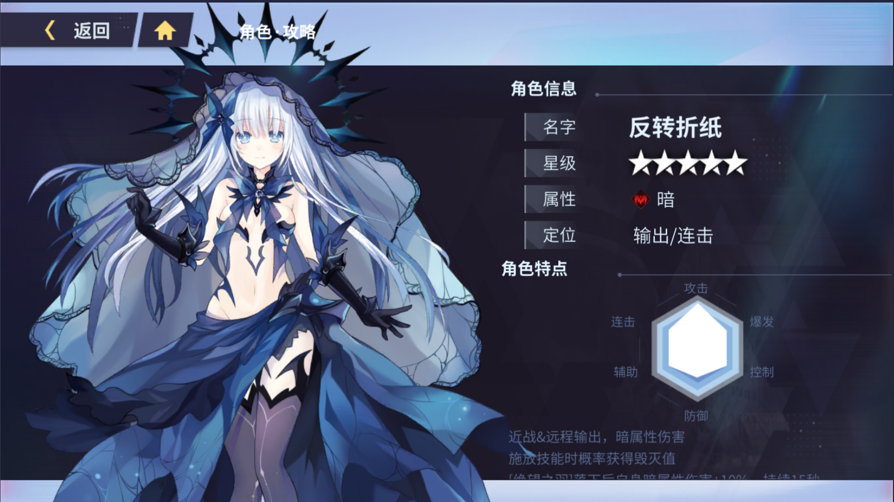
Tổng quan
Tên: Tobiichi Origami - Inverse Spirit Form - DevilHệ nguyên tố: Dark
Vai trò: DPS / Combo
Tinh linh cận chiến& tầm xa, sát thương thuộc tính bóng tối.
Có cơ hội nhận được [Hủy Diệt] khi thi triển kĩ năng
[Feathers of Despair - Lông vũ Tuyệt vọng] sau khi đáp xuống sẽ tăng 10% dark dmg trong 15s
Cơ chế năng lượng: Tuyệt vọng
Khởi đầu: 0 Max: 100
Hồi phục 2 điểm mỗi giây, và nhận thêm khi đánh thường
Khi nhận được [Hủy Diệt], [Cứu Thế Ma Vương] sẽ được tăng sức mạnh. Khi [Cứu Thế Ma Vương] được tăng sức mạnh 4 lần, lập tức thi triển [Feathers of Despair]
đến vị trí của mục tiêu gần nhất
[Feathers of Despair] sẽ gây 100% dark dmg, cộng thêm 10% lượng dmg Devil gây ra khi [Cứu Thế Ma Vương] được tăng sức mạnh.
Thông tin kĩ năng
Đánh thường: Satan 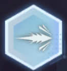o Quỷ vương [Satan] phóng ra chùm năng lượng về phía trước, gây 165% dmg
o Nâng cấp 1: Tăng thành 4 loạt, gây tổng cộng 270% dmg.
o Nâng cấp 2: Tăng tổng sát thương thành 345% dmg.
o Nâng cấp cuối: Khi tấn công có 20% triệu hồi 1 khẩu pháo tấn công ở vị trí mục tiêu, gây 50% dmg, và 10% lượng dmg đó chuyển thành máu
o Các điểm phụ, chỉ áp dụng cho skill này (chỉ số max):
* Tốc độ đánh +5%
* Khi chí mạng sẽ tăng 8% tốc đánh
* Mỗi đòn trúng mục tiêu sẽ hồi 1 năng lượng
* Tăng 10% dmg
Skill 1: Destruction - Phá hủy
o Sử dụng Quỷ vương [Satan] tấn công về phía trước, gây 240% dmg. Có 50% nhận được [Hủy Diệt]
o Nâng cấp 1: Sau khi tấn công 3 đòn, các khẩu pháo của [Satan] sẽ đâm xuống đất rồi tấn công phái trước, gây 380% dmg.
o Nâng cấp 2: Tạo ra vết nứt trên mặt đất. Tăng tổng sát thương thành 555% dmg.
o Nâng cấp cuối: Kẻ địch nhận sát thương từ vết nứt sẽ nhận thêm 10% sát thương từ kĩ năng. Tăng tổng sát thương lên 725% dmg
o Các điểm phụ, chỉ áp dụng cho skill này (chỉ số max):
* Hit rate +8%
* Giảm 3 năng lượng tiêu hao
* Tỉ lệ nhận [Hủy Diệt] tăng thành 80%, tăng thêm 12% dmg của [Destruction] trong 1s khi nó gây sát thương.
* Khi kĩ năng kết thúc có 60% làm choáng mục tiêu 2s
Skill 2: Magic Sword - Thanh kiếm ma thuật 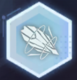
o Tập hợp các khẩu pháo lại và ném về phía mục tiêu, gây 240% dmg. Có 65% nhận được [Hủy Diệt]
o Nâng cấp 1: Các khẩu pháo sẽ tấn công trong phạm vi, tăng tổng sát thương lên 420%
o Nâng cấp 2: Các khẩu pháo sẽ bay lên và giáng mạnh xuống, tăng tổng sát thương lên 600%
o Nâng cấp cuối: Sát thương được cường hóa lên 745% dmg, và kẻ địch trúng đòn tấn công cuối sẽ bị choáng 2s
o Các điểm phụ, chỉ áp dụng cho skill này (chỉ số max):
* Tốc độ cast +8%
* Giảm 30% hồi phục trong 5s của kẻ địch bị trúng chiêu
* Tỉ lệ nhận [Hủy Diệt] tăng thành 100%, tăng 20% sát thương của [Miền cứu thế] trong 8s
* Khi kĩ năng crit sẽ giảm 15% def của mục tiêu trong 8s
Skill 3: Domain of Salvation - Miền cứu thế 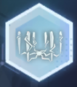
o Các khẩu pháo của [Satan] mở rộng về phía trước, và Devil bay cực nhanh trong khu vực đó, gây 280% dmg. Có 80% nhận được [Hủy Diệt]
o Nâng cấp 1: Tạo ra một dấu ấn lớn trên đất, tiếp tục gây sát thương trong 1 khoảng thời gian. Tổng sát thương tăng thành 440% dmg
o Nâng cấp 2: Các khẩu pháo đồng loạt phóng ra tia năng lượng hủy diệt về phía trung tâm của [Miền cứu thế]. Tổng sát thương tăng thành 600%
o Nâng cấp cuối: Khi cast kĩ năng tăng 10% dark dmg cho cả team, khi kĩ năng kết thúc Devil nhận giảm thương 15%. Cả 2 hiệu ứng tồn tại 8s. Tổng sát thương tăng thành 765%
o Các điểm phụ, chỉ áp dụng cho skill này (chỉ số max):
* CD -2s
* Sau khi kĩ năng được thi triển sẽ liên tục giảm 3% tốc độ di chuyển và 3% kháng dark của mục tiêu trong Miền 8s, cộng dồn 5 lần
* Sát thương của dấu ấn có 75% giảm 10% tốc đánh mục tiêu trong 8s
* Tăng 10% dmg
Ultimate: Canon Crown 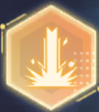
o Các khẩu pháo nổi của [Satan] tập hợp xung quanh Devil, phóng ra tia năng lượng tối, gây 1800% dmg.
Kết tinh
Quỷ vương: Cứu Thế Ma Vương «Satan» (救世魔王 - Salvator Demon)
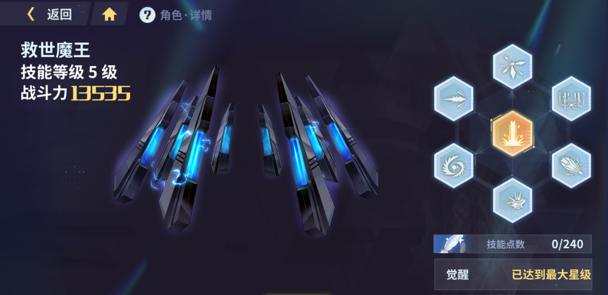
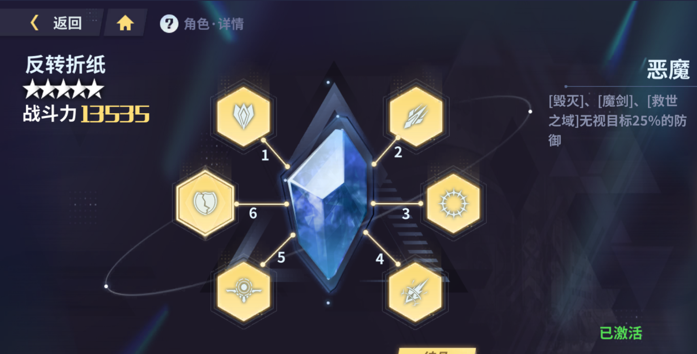
Vị trí 2: Endless Struggle - Đấu tranh bất tận: Sau khi [Feathers of Despair] rơi xuống, Devil nhận 30 năng lượng và tăng 30% atk trong 15s
Vị trí 3: Despair Hell - Địa ngục của Tuyệt vọng: Skill 1/2/3 tăng 25% dmg
Vị trí 4: Broken Soul: [Feathers of Despair] tăng 50% dmg, và sát thương thêm tăng từ 10% lên 15% sát thương tích lũy
Vị trí 5: Mind Barrier: Khi HP xuống dưới 30%, nhận 50% giảm thương và hồi 2% máu mỗi giây trong 10s
Vị trí 6: Demon: Skill 1/2/3 bỏ qua 25% def của mục tiêu
Bộ vết thánh - Sephira: Demon Arrive
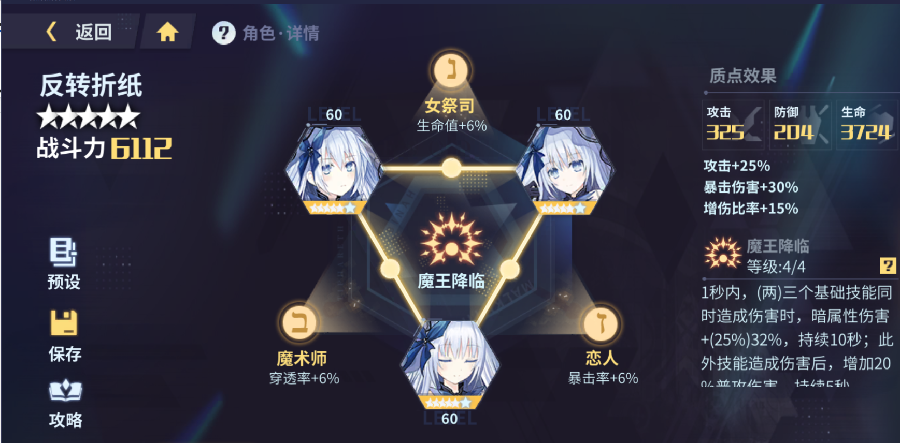
Chỉ số ở 6*:
* Kether - World Destruction: +25% atk
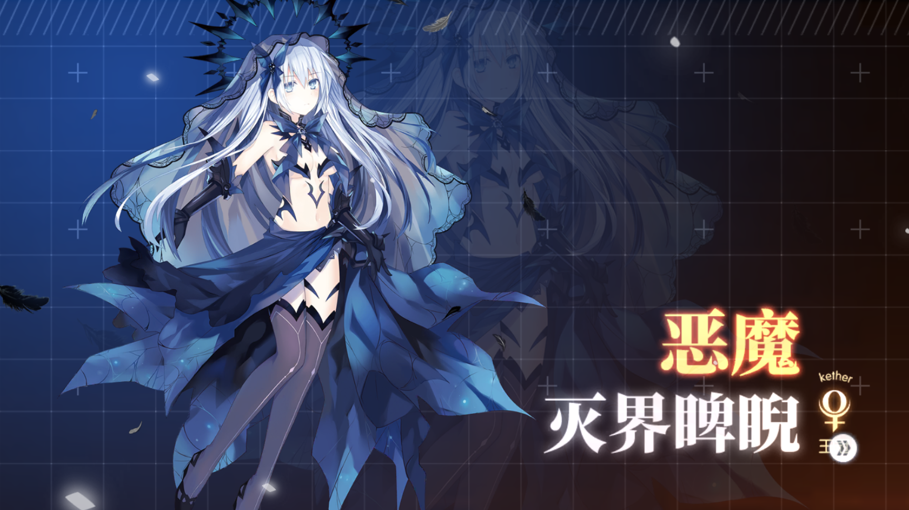
* Tiphareth - Salvation Mercy: +15% global dmg
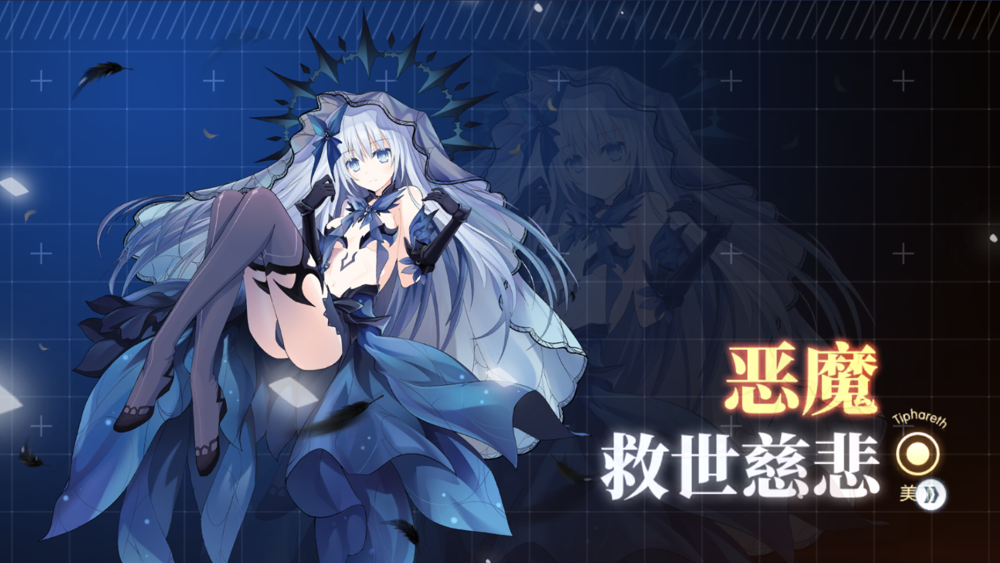
* Binah - True Darkness: +30% crit dmg
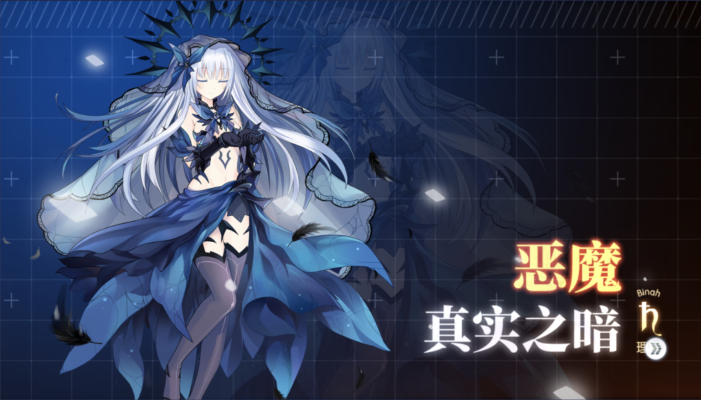
Link Kabbalah:
High Priestess: +6% HP
Magician: +6% pen rate
Lover: +6% crit rate
Effect full set: 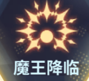
Trong 1s, nếu có (hai) ba skill cùng gây sát thương, tăng (12%/16%/20%/25%) 17%/21%/26%/32% dark dmg trong 10s. Sau khi skills gây dmg, tăng 20% dmg của đòn đánh thường trong 5s
Runestones
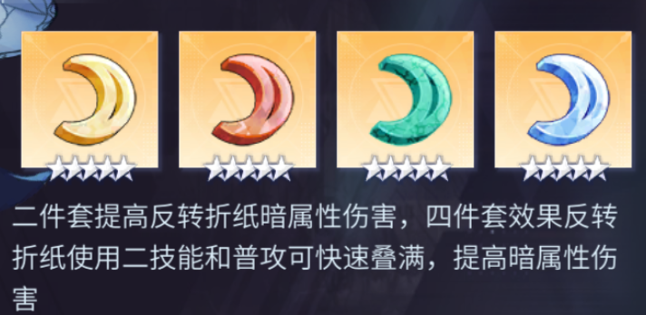
Có các bộ Rune thay thế khác như Cancer, Leo. Tuy nhiên với Cancer buff dựa trên năng lượng, lại chính là thứ Devil thiếu nến lượng buff sẽ không ổn định. Đối với Leo, set chỉ buff dmg lên mục tiêu trên 50% HP, vì vậy lượng buff cũng không nhiều. Các bạn có thể cân nhắc và sử dụng theo ý kiến cá nhân.
Bản thân người viết sau khi thử nghiệm nhiều lần đã lựa chọn set Mix Leo + Cancer, bởi đó là set đem lại kết quả thử nghiệm tốt nhất.
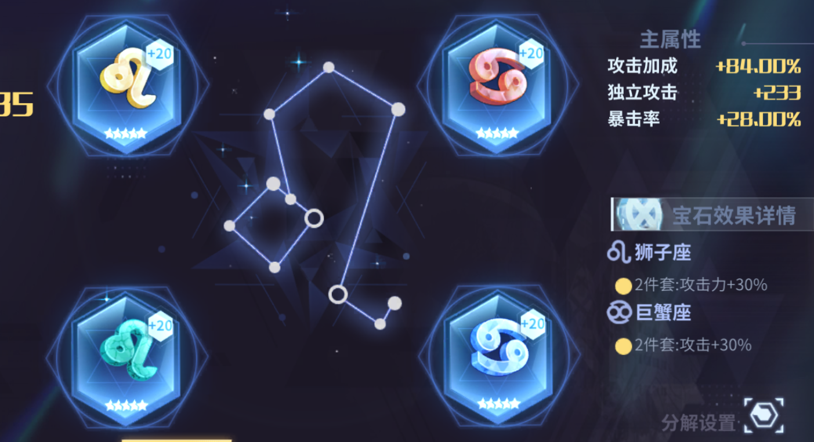
Đánh giá và lối chơi
Devil là một char dark dmg carry khá ổn với lối chơi được định hình là xen kẽ các skill với các đòn đánh thường.Về xây dựng chỉ số, Devil sử dụng cả chỉ số crit và pen, thiên nhiều hơn về Crit. Các chỉ số dòng chính đó là 3 viên ATK, 1 viên crit rate. Đối với dòng phụ thì nên lấy các chỉ số như crit rate > pen rate > crit dmg > global dmg > pen dmg > atk. (thứ tự chỉ mang tính chất tham khảo, dựa trên ý kiến cá nhân của người viết)
Về cách chơi, Devil có thiên hướng thả diều boss. Các bạn nên giữ khoảng cách với boss khi sử dụng skill 1 để có thể múa trọn vẹn skill. Việc đánh thường cũng rất quan trọng khi nó vừa bổ sung sát thương, hồi lại lượng nhỏ máu, và tăng mana. Ngoài ra có một điều cần lưu ý là luôn sử dụng skill 2 trước skill 3 (lý do được ghi trên phần mô tả của skill 2)